Rising fifth-year at Northeastern University studying Business Administration with a concentration in Finance and Data Science. I turn complex financial data into clear decisions through dashboards, models, and analysis that actually matter.
I'm a rising fifth-year at Northeastern University's D'Amore McKim School of Business, majoring in Business Administration and Data Science. My work spans equity research, credit underwriting, fixed income markets, and quantitative analytics — always at the intersection of finance and technology.
I've worked across Vietnam, New York, and Boston, building models in Excel, dashboards in Power BI, and pipelines in Python and SQL. I'm passionate about Emerging Markets, FX dynamics, and using data to surface insights that move decisions forward.
Power BISQLPythonExcel / Power QueryDCF ModelingFX AnalysisFixed IncomeData VisualizationBloomberg Terminal
Education
Northeastern University
D'Amore-McKim School of Business · Boston, MA
BS Business Administration & Data Science · May 2027 · GPA 3.9
Dean's List 2022–2026Finance Concentration
Certifications
Bloomberg BMC & ESG
JP Morgan Chase IB Virtual Experience Program (Forage)
AFA Methods of Detecting Financial Reporting Fraud
College Reading & Learning Association Certification
Skills
Analytics & Data
Power BISQLPythonExcel / Power QueryPivotTablesNetSuite
Fixed Income Emerging Markets Quantitative Data Analyst Co-op
Incoming July 2026
KPIM
Apr 2026 – Present
Hanoi, VN (Remote)
Business Intelligence
Business Intelligence Intern
Rebuilt end-to-end Power BI banking dashboard for a Big 4 Vietnamese bank across 1.215 million rows of transaction data integrating risk governance, portfolio monitoring, and customer development modules
Authored 5 data education blog posts for KPIM Academy students, breaking down real-world data cleaning and SQL workflows; content reached the full student cohort and reduced repeat questions to instructors on covered topics
BIDV
May 2025 – Aug 2025
Ho Chi Minh City, VN
Private Credit
Private Credit Intern
Supported credit underwriting and collateral (real estate) review for bank loans and secured lending for high-net-worth clients
Advised clients on FX hedging strategies to preserve asset value amid currency volatility
Tracked mutual fund performance and supported portfolio adjustments aligned with client risk tolerance through Excel-based modeling
Loop Capital
Jan 2024 – Jun 2024
New York City, NY
Finance & Accounting
Finance & Accounting Co-op
Projected and streamlined monthly expense accruals for IB & Asset Management entities using Excel Pivot Tables, improving financial planning visibility by 10%
Analyzed revenue data for 200+ employees, supporting performance evaluation and operational efficiency
Maintained municipal bond watchlists in Fixed Income markets, tracking yield movements, spread changes, and macro drivers
MBS
May 2023 – Aug 2023
Ho Chi Minh City, VN
Equity Research & Investment
Stock Brokerage Intern
Delivered investment recommendation with 30% upside in 6 months using a self-built DCF model in Excel
Managed a diversified portfolio (equities, funds, bonds) with risk analysis and Emerging Markets sector research
Applied M-score model to detect earnings manipulation and identify red flags in financial statements
Northeastern University
Jan 2023 – Present
Boston, MA
Teaching
Teacher Assistant & Peer Tutor
Tutored students in Financial Accounting and Business Statistics; achieved A- or higher for all tutees
Served as liaison to foster experiential learning and community support across Boston
Projects & Analysis
9 projects across data analytics, financial modeling, and strategy consulting.
Built a multi-sheet Excel reporting system for KPIM Mart, a supermarket chain across 27 Hanoi locations. The dashboard enables management to compare store-level and district-level performance across 2020–2022, drilling into monthly trends, manager benchmarks, and customer tier contribution.
Applied the RFM (Recency, Frequency, Monetary) model to a dataset of 35,152 customers to segment purchasing behaviour and surface actionable insights for retention and growth. Built an interactive Power BI dashboard with drill-through, page tooltips, and multi-dimensional filtering.
Tools
SQL, Power BI
Dataset
35,152 customer rows
Method
RFM Segmentation — Recency, Frequency, Monetary
Goal
Retention insights & growth opportunities
Objectives
Apply RFM model to classify customers by purchasing behaviour
Understand recency, frequency, and monetary patterns across segments
Provide actionable recommendations for retention and growth
Recommendations
Target New High Spending customers with exclusive offers, especially during holidays
Re-engage lapsed customers using promotions — holiday periods drive bulk purchases
Optimize discount strategy to improve margins
SQL Code
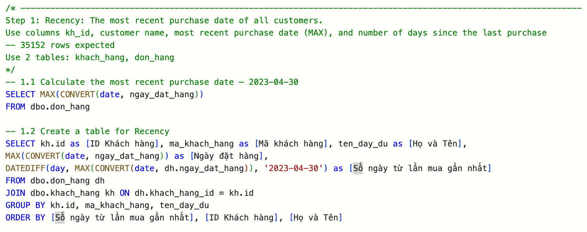
Step 1 — Recency: Most recent purchase date per customer
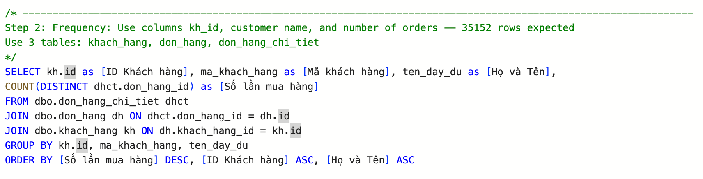
Step 2 — Frequency: Number of orders per customer
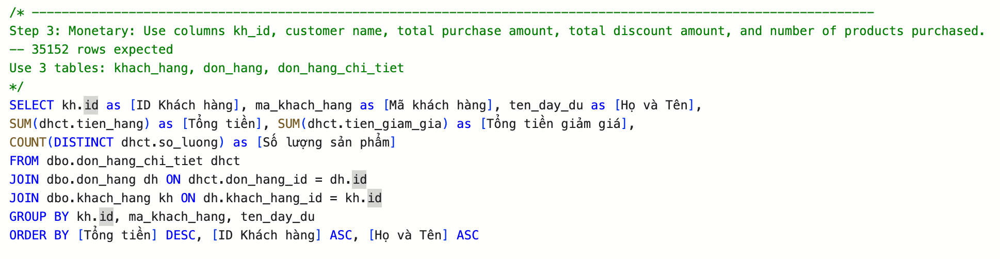
Step 3 — Monetary: Total spend, discount, and product count per customer
Revenue Report — Monthly trends, product category & store breakdown
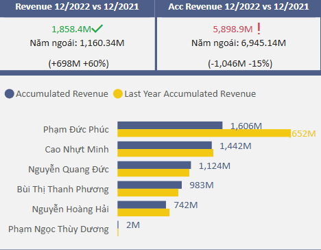
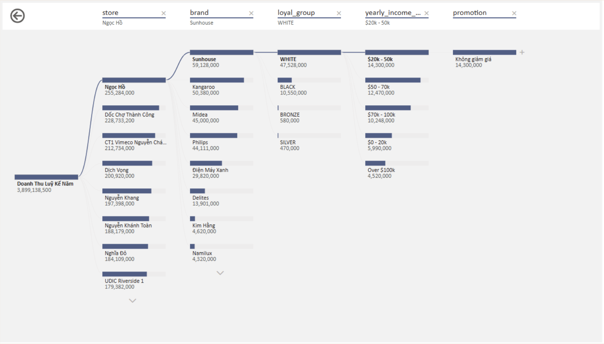
Advanced features — Page tooltips & drill-through by store, brand, membership tier
Christmas Sales — Europe Analysis
Project
Christmas Sales over Europe Countries & Cities Analysis
Analyzed multi-year Christmas sales data from a European supermarket chain to uncover key behavioral and regional drivers of seasonal revenue growth. Used SQL (CTEs, subqueries) to answer 10 business questions across channel, geography, demographics, and product category.
Tools
SQL — CTEs, Subqueries, Window Functions
Scope
4 Christmas seasons · 10 countries · multi-city
Dimensions
Country, channel, product category, age, gender
Goal
Actionable strategies for marketing, pricing & channel optimization
Objectives
Analyze multi-year Christmas sales to uncover behavioral and regional revenue drivers
Identify patterns by country, channel, product category, and customer segment
Translate findings into actionable strategies for marketing, pricing, and channel optimization
Key Findings & Recommendations
Expand digital and seasonal channels to target older demographics shifting away from in-store
Optimize in-store displays and staffing during afternoon peaks (3 PM busiest hour)
Promote products to female shoppers earlier in the week — highest activity on Mondays
Prioritize high-margin categories such as toys and building sets in high-growth markets
Analysis Results
10 business questions answered across revenue trends, geography, customer behaviour, and product performance.
Q1Revenue, quantity, cost and profit by Christmas season (excluding 2017–2018 due to incomplete data)→ Revenue stable ~$7M/season; 2019–2020 peaked at $7.18M; profit margin consistent ~77%
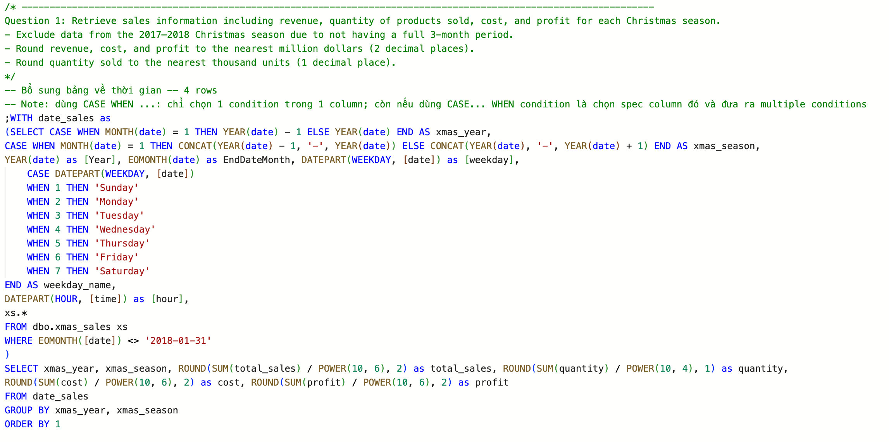
SQL — Seasonal view using CASE WHEN to define xmas_year & season; exclude incomplete 2017–2018
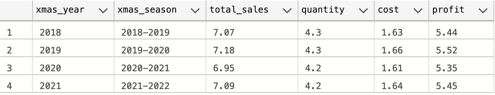
Results — Revenue, quantity, cost & profit per Christmas season (2018–2021)
Q2YoY percentage growth in revenue, quantity sold, and profit for the most recent season vs previous year→ 2021–2022: revenue +1.9%, quantity flat, profit +1.9% vs prior season; 2020–2021 saw a dip of −3.2%
Results — YoY growth rates for revenue, quantity & profit across all seasons
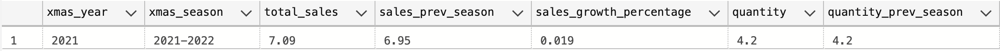
Most recent season (2021–2022) — full row: sales growth +1.9%, quantity stable, profit +1.9%
Q3Percentage growth in revenue across all Christmas seasons (simple YoY trend)→ 2019–2020 grew +1.5%; 2020–2021 contracted −3.2%; 2021–2022 recovered +1.9%
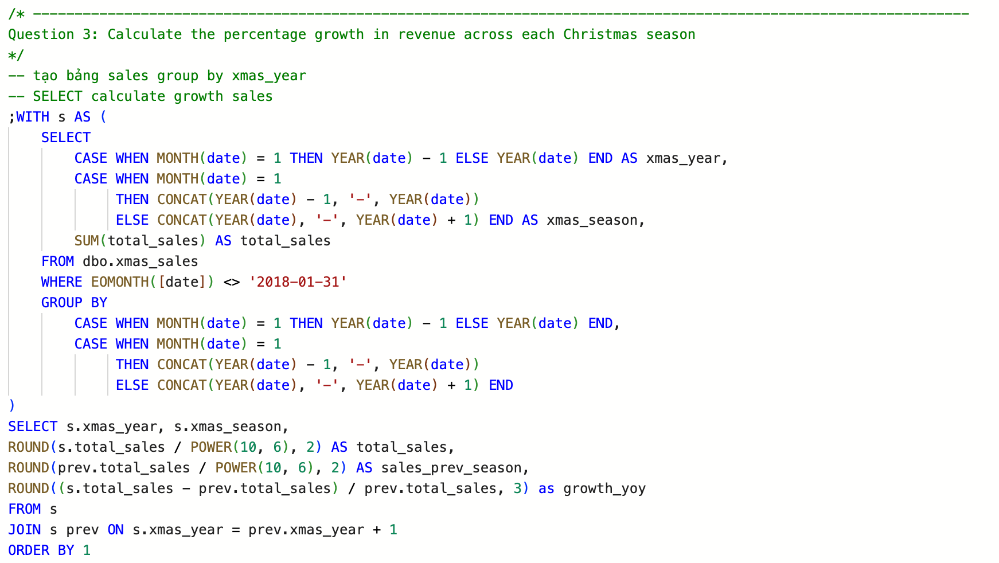
SQL — Self-join on xmas_year to calculate growth_yoy across all seasons
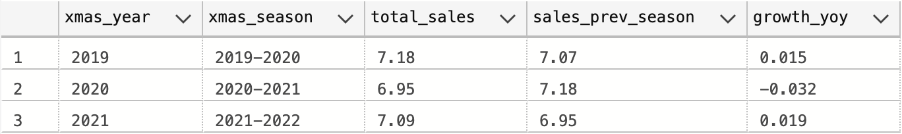
Results — Season-over-season revenue growth rate (2019 to 2021)
Q4Revenue share by purchase channel (Online, In-store, Xmas Market) per season→ In-store dominates ~64–67% of revenue every year; online and Xmas Market split the remainder evenly
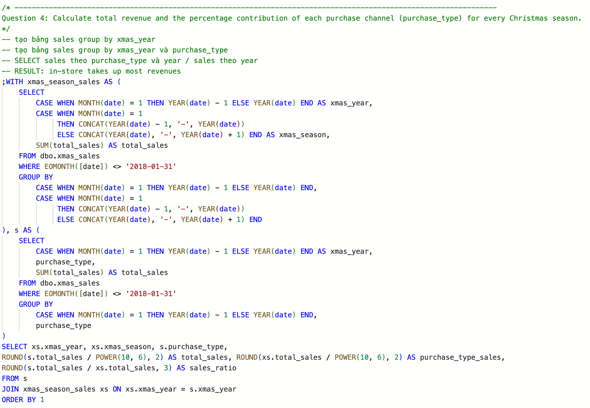
SQL — Double CTE joining season totals with channel breakdown to compute sales_ratio
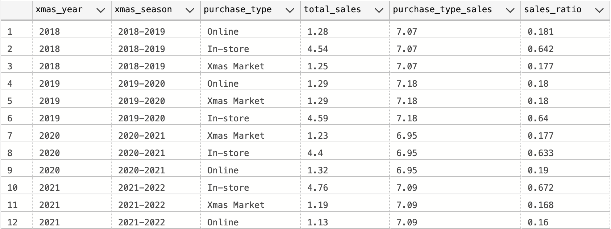
Results — In-store 64–67% each season; Online and Xmas Market ~18% each
Q5Revenue by country and city, sorted descending→ Sweden leads ($3.82M), followed by Netherlands and Germany; Berlin is top city
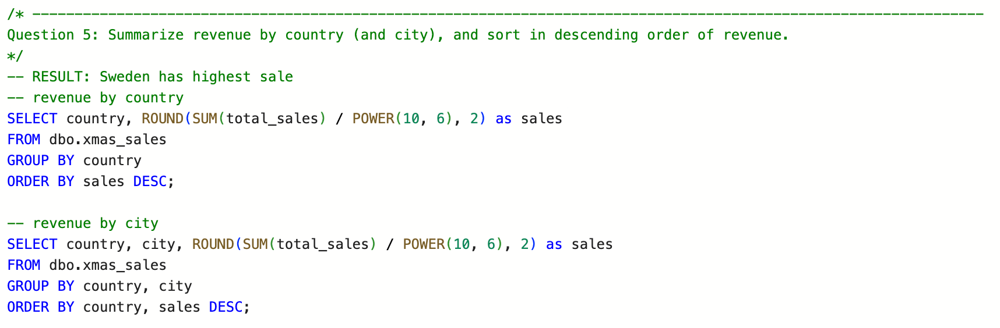
SQL — Revenue by country and by city, descending order
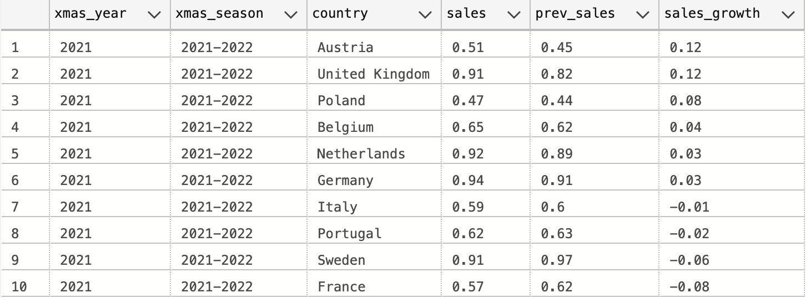
Results — Sweden leads by country; Berlin leads by city
Q6Rank countries by revenue growth rate in the most recent Christmas season (2021–2022)→ Austria and United Kingdom tied for highest growth (+12%); Sweden declined the most (−6%) despite leading in total revenue
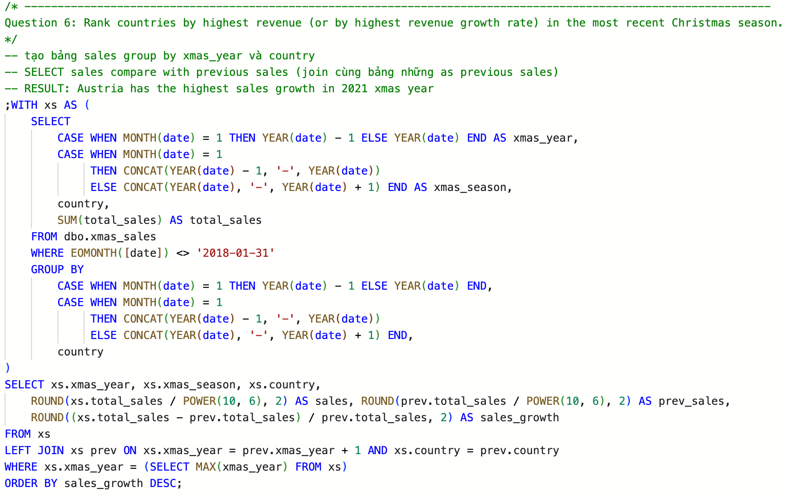
SQL — YoY sales growth by country using self-join on xmas_year
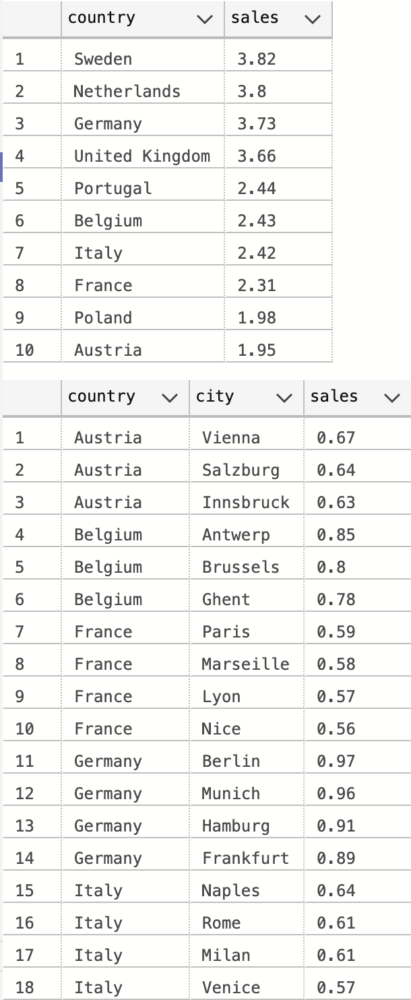
Results — Austria & UK highest growth; Sweden & France declined
Q7Revenue share by age group, gender, and purchase method→ Age 1–11 has highest share (38.9%); Female slightly outspends Male (50.6% vs 49.4%); In-store = 64.7%
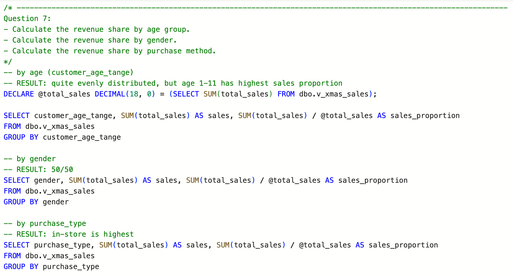
SQL — Revenue share by age group, gender, and purchase method
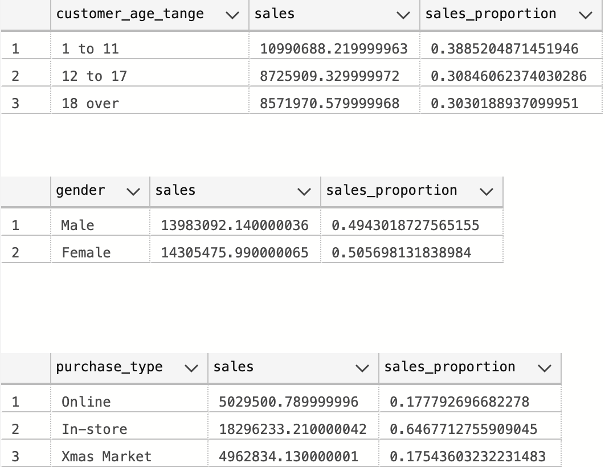
Results — Age 1–11 leads (38.9%); Female 50.6%; In-store 64.7%
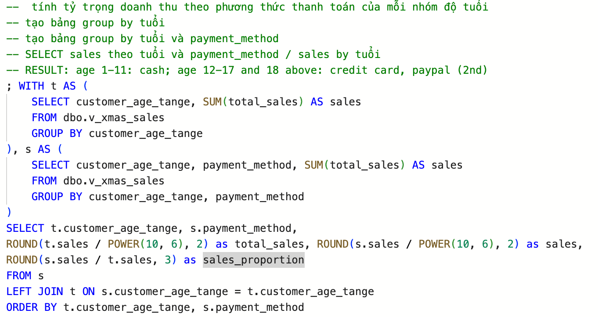
SQL — Revenue proportion by age group & payment method
Q8Purchase channel mix within each age group→ In-store still dominates all ages, but online & Xmas Market share rises as age group increases
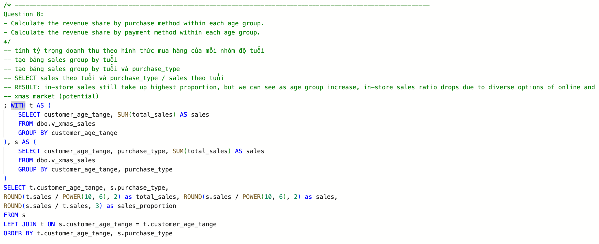
SQL — Revenue share by purchase channel within each age group
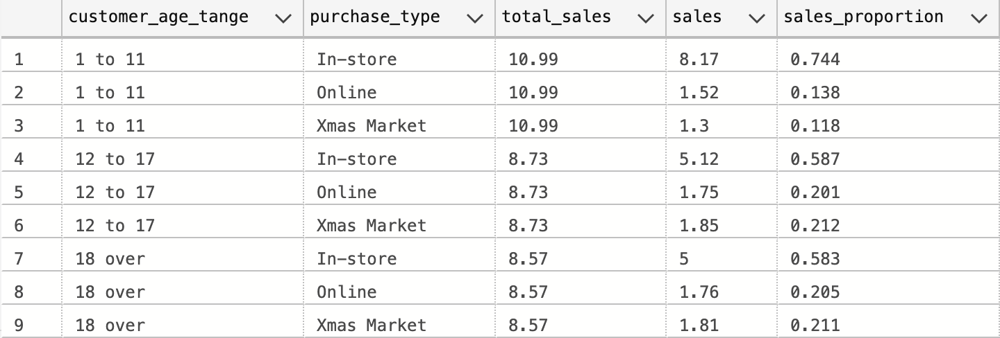
Results — In-store share drops from 74.4% (age 1–11) to 58.3% (18+)
Q9Sales, profit ratio, and avg unit price by product category→ Toys: highest sales ($4.46M) & profit; Building Sets: highest profit ratio despite only 5th in sales
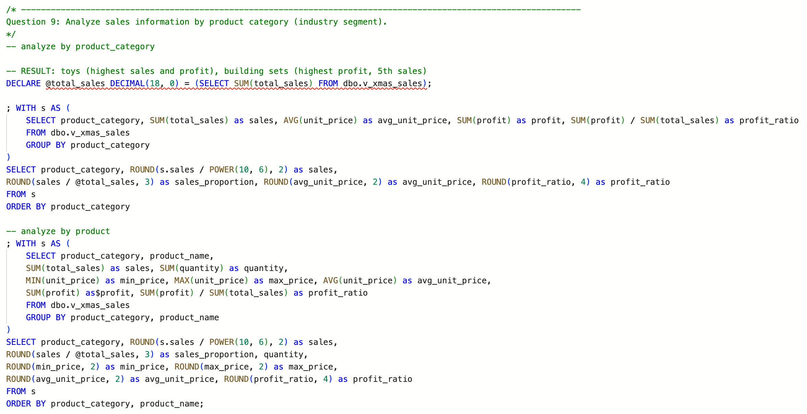
SQL — Sales, profit ratio & avg unit price by product category
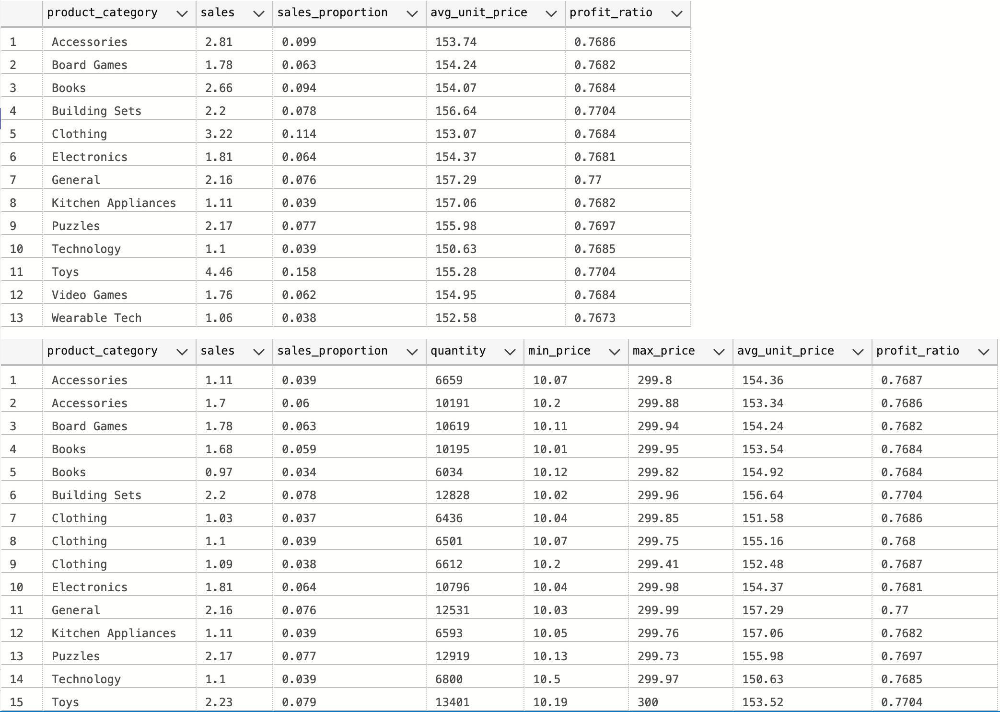
Results — Revenue and profit by product category
Q10Shopping patterns by day of week (gender) and time of day→ Female shoppers peak on Monday; peak hour is 3 PM (15:00) across all customers
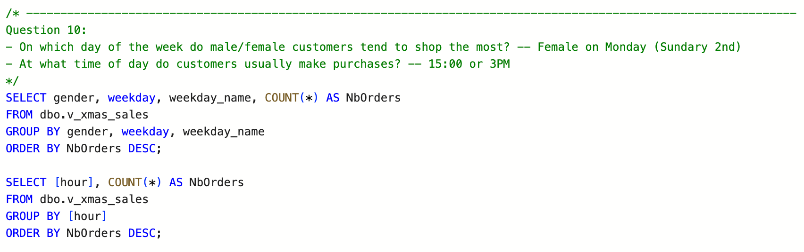
SQL — Orders by gender & weekday, and by hour of day
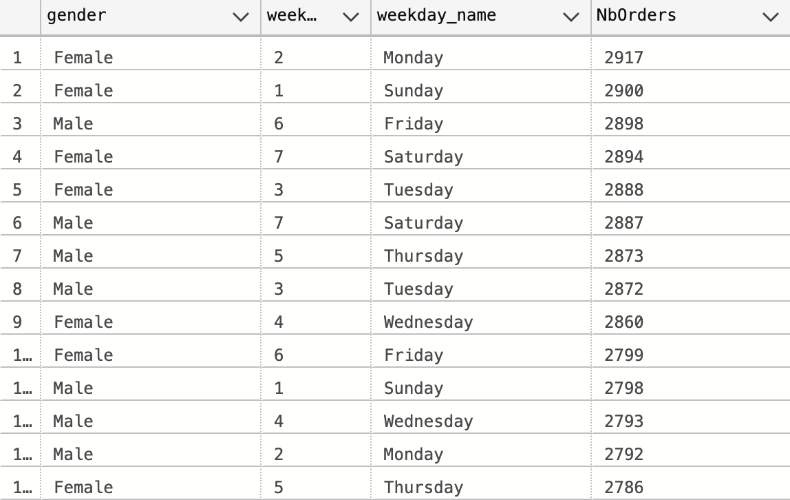
Results — Orders by gender & weekday (Female peaks Monday)
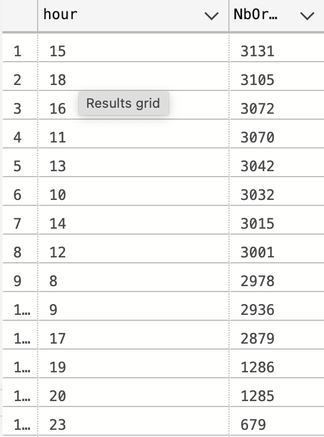
Results — Orders by hour of day (peak at 15:00 / 3 PM)
Restaurant Best Food Award Analysis
Project
Restaurant Best Food Award & Attraction Analysis
Investigated whether number of reviews correlates with higher food ratings or receiving Best Food Awards across US states, using Python statistical analysis. Examined how this relationship varies by geography and what it means for restaurants and consumers.
Tools
Python, Statistics
Methods
Correlation analysis, distribution skewness, state-level aggregation
Scope
50 US states · restaurant-level data
Research Question
Do more reviews = higher ratings or Best Food Awards?
Confounding Factors Considered
Population size directly impacts restaurant foot traffic and review volume — higher-population states naturally accumulate more reviews
State-level competition density affects how review counts distribute across restaurants
These factors can inflate averages and obscure the true reviews-to-quality relationship
Conclusions & Implications
Weak correlation: more reviews does not reliably predict higher food ratings
Weak correlation between review volume and receiving a Best Food Award
Restaurants should prioritize quality and experience over chasing review counts
Consumers should weight rating consistency and award status over raw review numbers
Analysis & Findings
Finding 1Reviews vs Food Ratings — scatter plot by state with best-fit line→ Weak positive correlation (slope = 0.00018); states with fewer reviews can still maintain high avg ratings
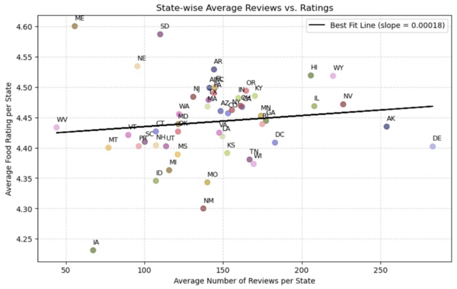
State-wise average reviews vs average food rating — weak positive correlation
Finding 2Awards vs Reviews — average and median review counts for Best Food Award vs No Award restaurants→ Averages nearly equal (155.9 vs 153.3), but median shows a clearer gap: Award restaurants have higher median (104 vs 82)
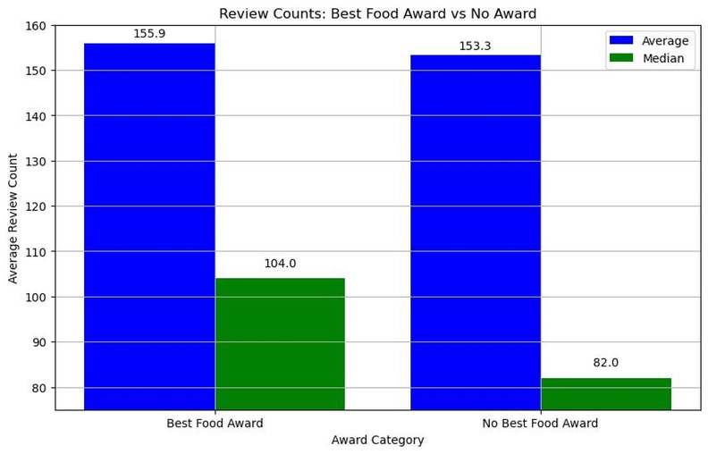
Average & median review counts: Best Food Award vs No Award restaurants
Finding 3Review distribution histograms — Best Food Award vs No Award restaurants→ No-Award group is far more right-skewed (skewness 10.26 vs 3.19), indicating outliers inflate the average
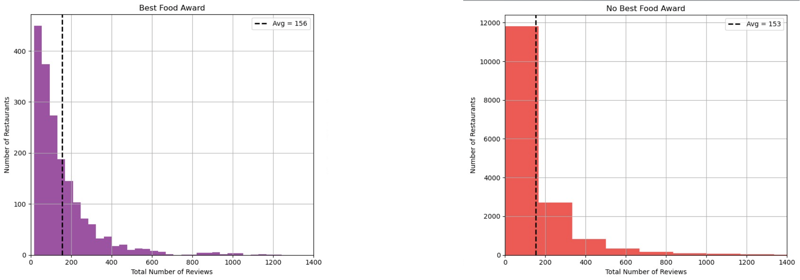
Review distribution: Best Food Award (left, skew 3.19) vs No Award (right, skew 10.26)
Finding 4State-level correlation between reviews and Best Food Award — top positive and negative states→ KY leads positive correlation (0.38); WV shows strongest negative (−0.24); relationship varies significantly by state
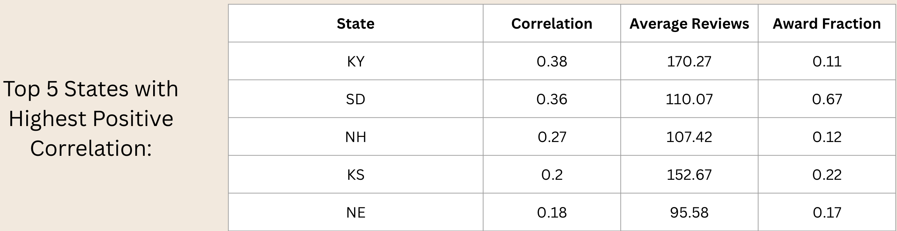
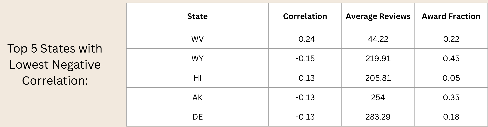
Identifying Award Winning Restaurants - Table
Ford Financial Statement Analysis
Project · Leader & Quantitative Analyst
Ford Motor Company Financial Statement Analysis
Conducted a comprehensive 10-year financial ratio analysis (2013–2022) of Ford Motor Company, benchmarked against General Motors (traditional competitor) and Tesla (innovative disruptor). Covered liquidity, activity, debt, profitability, market ratios, and DuPont decomposition to assess Ford's financial health, strengths, and weaknesses.
Liquidity: Stable and sufficient to cover short-term obligations
Efficiency: Strong inventory turnover, but weaker in collecting receivables and managing payables
Debt: Heavily leveraged vs peers — avg D/A ratio 0.86, leaving Ford more exposed to interest costs
Profitability: Volatile — negative margins, ROE, and EPS in 2022
Overall Assessment
Market position: Valued closer to GM (traditional auto) than Tesla (high-growth EV)
DuPont: Declining profitability and high leverage drag down returns
Tesla shows rising profitability and deleveraging trend; GM shows steady performance
Ford is financially stable short-term but struggles with heavy debt and weak profitability
Charts & Analysis
Share PriceFord Motor Co. historical share price 2013–2023→ All-time high $25.19 (Jan 2022); COVID low $4.01 (Mar 2020); avg $12.37 over the period
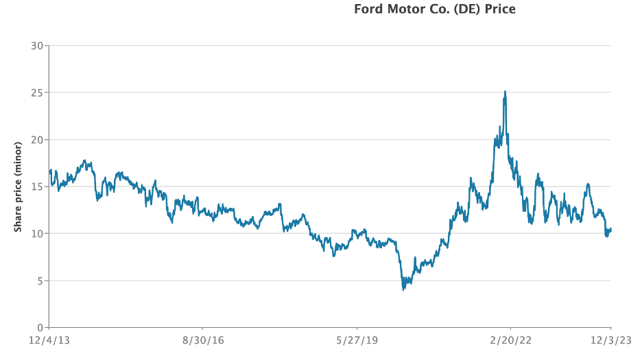
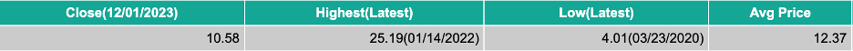
Ford Motor Co. share price 2013–2023
LiquidityCurrent ratio and quick ratio — Ford vs GM vs Tesla (2013–2022)→ Ford maintains adequate liquidity; Tesla shows strongest improvement in recent years
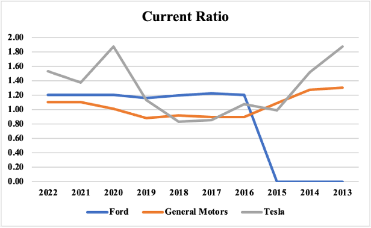
Current Ratio — Ford vs GM vs Tesla (2013–2022)
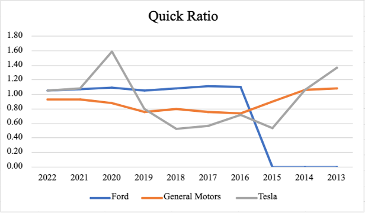
Quick Ratio — Ford vs GM vs Tesla (2013–2022)
ActivityInventory turnover, average collection period, total asset turnover, average payment period→ Ford leads in inventory turnover (~16×); longer collection period than GM signals weaker receivables management
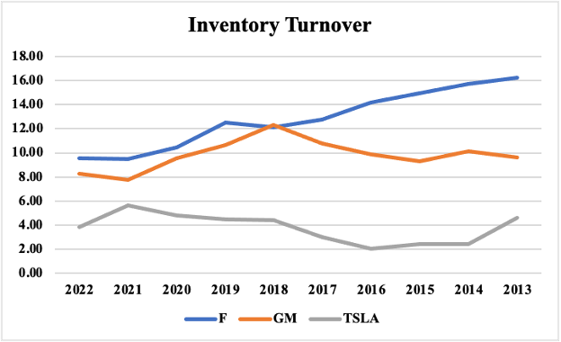
Inventory Turnover — F vs GM vs TSLA (2013–2022)
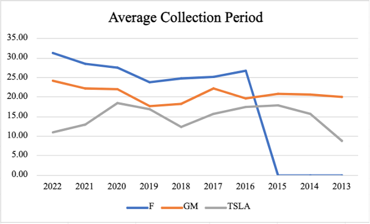
Average Collection Period — F vs GM vs TSLA (2013–2022)
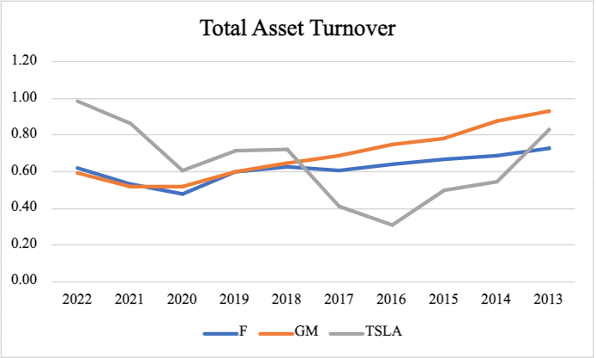
Total Asset Turnover — F vs GM vs TSLA (2013–2022)
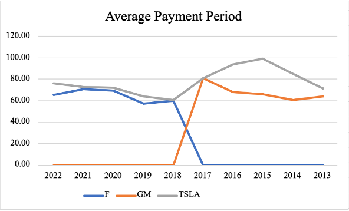
Average Payment Period — F vs GM vs TSLA (2013–2022)
DebtDebt-to-Asset ratio and Financial Leverage Multiplier — 10-year trend vs peers→ Ford's D/A avg 0.86 — highest among peers; leverage multiplier avg 7.42 vs GM's 4.69 and Tesla's 4.65
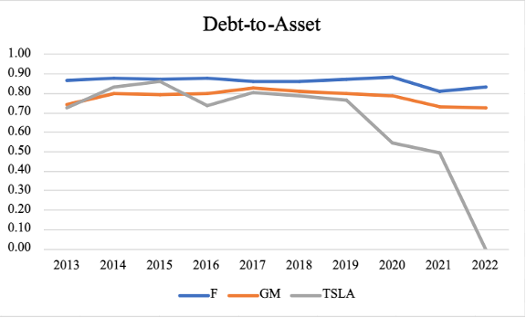
Debt-to-Asset ratio — F vs GM vs TSLA
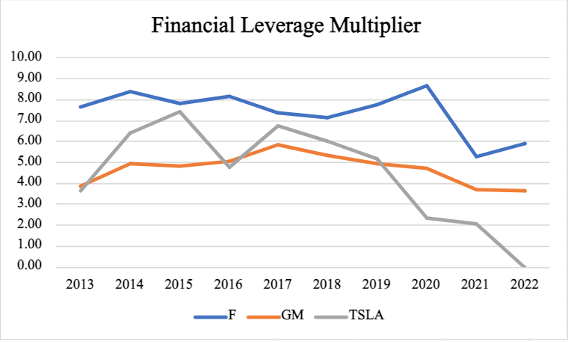
Financial Leverage Multiplier — F vs GM vs TSLA
Debt CoverageTimes Interest Earned — ability to cover interest expenses from operating income→ Ford's avg TIE of 11.26 lags GM's 28.69; Tesla surged to 85.52 in 2022 as profitability improved dramatically
Times Interest Earned — F vs GM vs TSLA (2013–2022)
ProfitabilityGross, operating, and net profit margins — 10-year comparison→ Ford's margins volatile and declining; Tesla crossed into sustained profitability post-2020; GM most consistent
Gross Profit Margin — F vs GM vs TSLA (2013–2022)
Operating Profit Margin — F vs GM vs TSLA (2013–2022)
Net Profit Margin — F vs GM vs TSLA (2013–2022)
ReturnsEPS, ROA, and ROE — earnings and returns on assets and equity→ Ford EPS turned negative in 2022; ROE volatile; Tesla ROE improved sharply from deeply negative to positive
EPS — F vs GM vs TSLA (2013–2022)
ROA — F vs GM vs TSLA (2013–2022)
ROE — F vs GM vs TSLA (2013–2022)
Market & DuPontPE ratio, Market-to-Book ratio, and DuPont decomposition of ROE→ Ford and GM trade at low P/E and M/B vs Tesla's premium; DuPont shows Ford's ROE dragged by low margins and high leverage
PE Ratio — F vs GM vs TSLA (2013–2022)
Market-to-Book Ratio — F vs GM vs TSLA (2013–2022)
DuPont Analysis — ROE decomposition, F vs GM vs TSLA (2013–2022)
Stock Portfolio Report
Project · Stock Analyst & Trader
Stock Portfolio Report — Long-Term Capital Appreciation
Built and managed a simulated $10M portfolio targeting long-term capital appreciation through large-cap U.S. stocks and ETFs. Benchmarked against the S&P 500. Strategy: 55% ETFs, 45% individual stocks, focused on technology, consumer discretionary, and energy sectors, with low-frequency trading to minimize costs.
Portfolio Size
$10,000,000 simulated
Strategy
55% ETFs · 45% Individual Stocks
Benchmark
S&P 500 Index
My Role
Stock Analyst & Trader
Final Findings
Portfolio return 7.47% vs S&P 500 return of 7.80% over 3 months (Oct–Dec 2023) — slightly underperformed the benchmark
Tech (+10.65%) and consumer discretionary (+8.2%) outperformed; Energy was a negative contributor (−0.85%)
Heavy ETF use gave stability but limited upside vs a more concentrated stock approach
Portfolio beta 1.04 — close to market risk, slightly higher volatility than S&P 500
Attribution & Lessons Learned
Allocation helped in Retail Trade and Consumer Non-Durables sectors
Stock selection weak in Energy, Consumer Durables, and Financial Services
Clearer initial performance metric (Sharpe ratio) would have guided better allocation; stronger stock picking and entry price discipline needed
Portfolio Analysis
PerformancePortfolio vs S&P 500 return — Oct 4 to Dec 1, 2023→ Portfolio: 7.47% | S&P 500: 7.80% over 3 months (Oct 4 – Dec 1, 2023) — tracked closely, slight lag in final weeks
Portfolio vs S&P 500 market value — Oct to Dec 2023
AttributionWeighted sector returns vs S&P 500 benchmark — portfolio vs benchmark contribution→ Electronic Technology drove the largest weighted return (5.01%); Energy the only negative contributor (−0.08%); total portfolio 7.47% vs benchmark 7.10%
Allocation EffectReturns due to allocation — fund weight vs benchmark weight by sector→ Overweight in Electronic Technology (+19.66% vs benchmark); underweight in Miscellaneous (−18.33%) and Financial Services (−4.68%)
Exhibit 7 — Fund weight vs benchmark weight & difference by sector
DividendsDividend income received across equity holdings during the period→ LMT highest dividend income ($3,524.85); AAPL lowest ($684.00); total dividend contribution from 4 holdings: LMT, PEP, KHC, AAPL
Perceived vs Actual Inflation & Household Spending
Examined how perceived inflation (SCE — Survey of Consumer Expectations) and actual inflation (PCE — Personal Consumption Expenditures) influence household spending behaviour in the U.S. in the short-term post-COVID period. The core question: do consumers spend based on what they believe will happen to prices, or what is actually happening?
Tools
Python — numpy, pandas, matplotlib
Methods
Linear Regression (ML), MSE, R-squared, Correlation
Figure 1 — SCE vs Consumer Spending Change (scatter)
Figure 1 — Linear regression model with train/test split
Finding 2Actual PCE Inflation vs Consumer Spending Change — scatter plot with trend line→ Stronger negative correlation (r = −0.5812); as actual prices rise, consumers reduce spending — a clearer, more consistent relationship
Figure 2 — PCE vs Consumer Spending Change (scatter)
Figure 2 — Linear regression model with train/test split
CBS Case Competition: BESS Strategy
Case Competition
CBS Case Competition: European Energy — Global BESS Strategy
Developed a three-year global market entry and investment strategy for European Energy (EE) to expand into Battery Energy Storage Systems (BESS) and evolve from a renewable energy producer into a full energy company. The team evaluated which countries EE should enter, how much to invest (~€296M CAPEX), and whether retrofit vs. standalone projects would maximize returns.
UK · Germany · Australia · Denmark · Lithuania · Poland · Finland
Total CAPEX Recommended
~€295.8M over 2026–2028
Key Insights
Retrofits outperform standalone projects in mature markets due to faster grid access and higher IRR
Emerging markets like Lithuania and Poland show exceptionally strong IRR driven by subsidies and low competition
LDES (Long-Duration Energy Storage) offers strategic advantage in UK and Germany despite policy complexity
A balanced mix of retrofits (short-term wins) and standalone projects (long-term growth) maximizes portfolio value
Recommendation
Prioritize retrofit projects in mature markets — UK, Australia, Germany — for high near-term IRR & NPV
Capture high-growth opportunities in emerging markets — Lithuania, Poland
Invest early in LDES partnerships to secure future technological leadership
Deploy ~€296M CAPEX over 2026–2028 aligned with risk-adjusted returns, splitting €97.2M · €99.4M · €99.2M per year
Analysis & Deliverables
FinancialsCAPEX allocation by project type and country — NPV, IRR & WACC comparison across all markets→ 52.4% standalone / 47.6% retrofit split; Lithuania leads in IRR; Germany commands largest CAPEX at 33.81%
CAPEX allocation by type & country (left) · Country retrofit vs standalone NPV/IRR/WACC (right)
Investment Timeline3-year phased capital deployment — competitive vs emerging markets→ 2026: secure Germany (€40M) + Lithuania (€30.8M) first; 2027–2028: expand into Denmark, Poland, Finland
Competitive MarketsCountry-level strategy for Australia, UK, and Germany — retrofit vs standalone decision→ All three favor Retrofit > Standalone for higher IRR & NPV; Germany unique in standalone advantage due to diverse electricity supply
Strategy cards — Australia, United Kingdom & Germany: retrofit vs standalone rationale & risks
Emerging MarketsCountry-level strategy for Denmark, Lithuania, Poland, and Finland→ Lithuania: highest IRR & NPV for both project types; Poland: retrofit-focused backed by state partnerships; Finland: standalone for price arbitrage
Risk Matrix4 key risks rated by likelihood and impact — with defined mitigations→ Grid access competition (high likelihood, high impact) is the most critical risk; LDES subsidy constraints manageable via Power-to-X conversion
Risk & Mitigation Matrix — likelihood vs impact with defined mitigation strategies
Trade-off AnalysisStrategic trade-offs across market portfolio, revenue type, time to market, and value-chain ownership→ Stability over aggressive growth: contracted revenue preferred; retrofit prioritized for first-mover advantage; partnerships in mature markets to retain share
Trade-off Analysis — Market Portfolio · Revenue Type · Time to Market · Value-chain Ownership
USD/CNY FX Rate vs China Exports
Project · Macroeconomic & Data Research Analyst
USD/CNY FX Rate vs China's Exports to the US
Built an interactive Python dashboard using API-sourced data to explore the relationship between the USD/CNY exchange rate, the Fed Funds Rate, and China's export volumes to the United States. The dashboard supports exploratory analysis through two complementary visualizations and interactive filters across date range, FX rate, and Fed Funds rate.
Tools
Python — Pandas, Plotly, Dash
Data Sources
FRED API — USD/CNY, Fed Funds Rate, China–US Export volumes
Dashboard Features
Interactive filters · Date range slider · FX & Fed Funds range sliders
Period
2000–2005 (pre-RMB reform era)
Key Finding — Inverse Relationship
USD/CNY FX rate and China's export volumes to the US show an inverse relationship — counterintuitive to standard trade theory
Conventional logic: a weaker CNY (higher USD/CNY) should boost exports by making Chinese goods cheaper
Instead, export volumes trend upward even as the FX rate remains pegged and relatively stable
This suggests China's exports are not primarily price-driven in this period
Why This Happened — Structural Shift
China had shifted away from commodity and low-cost manufacturing toward price-inelastic products — electronics, medical devices, and technology goods
These categories are demand-driven rather than price-driven: US buyers import them regardless of exchange rate movements
Total export dollar volume grew without relying on a competitive exchange rate advantage
Insight: China's export competitiveness was increasingly structural, not monetary
Dashboard Screenshots
Data TableInteractive filtered table — USD/CNY, Fed Funds Rate, and China–US Export volumes by month→ Filterable by date range, FX rate range, and Fed Funds rate range; shows all three variables side by side for any selected period
FX vs Fed FundsUSD/CNY exchange rate vs Fed Funds Rate over time — dual line chart→ CNY pegged flat at ~8.28 throughout (PBOC managed peg); Fed Funds Rate fell sharply from 4.2% to ~1% (2001–2003 rate cut cycle) — FX rate unresponsive to US monetary policy
FX Rate (blue, flat at ~8.28) vs Fed Funds Rate (red, falling 2001–2003)
Exports vs FX RateChina's export volumes to US (bar) vs USD/CNY FX rate (line) — dual-axis chart→ Export volumes grew steadily from ~$7K to ~$18K (2000–2004) despite a flat/declining FX rate — confirming the inverse relationship driven by China's shift to price-inelastic tech and medical exports
China–US Export Volume (bars) vs USD/CNY FX Rate (red line) — inverse trend visible 2000–2004